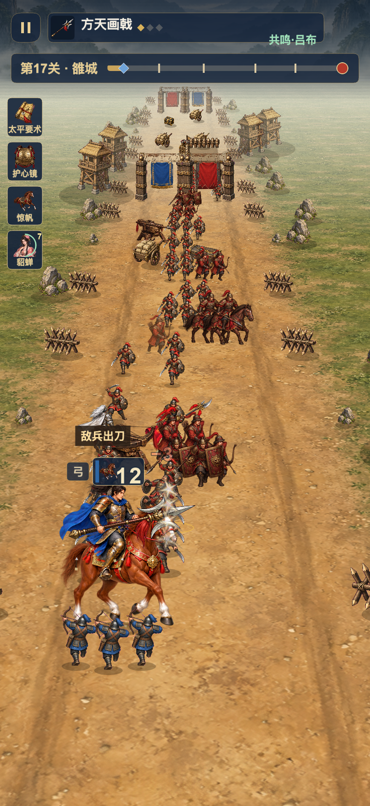
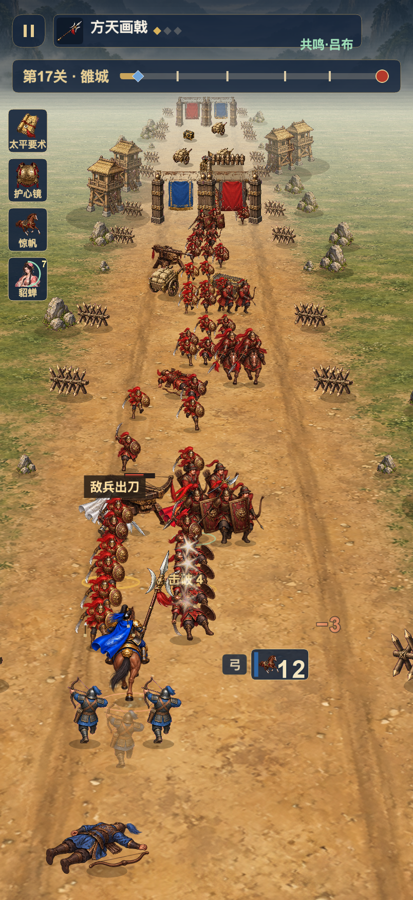

下面是正式 Cocos 场景中的实际前后截图和原速片。二十关、规则、装备、存档及既有音效继续保留。
侧身大幅骑马立绘改为后背朝前行军，缩小人物比例；四匹坐骑使用真实独立行进帧。
受击有局部反冲和真实血量削减；敌军倒地后失去站立体积，队列留下缺口。
损耗对应兵位倒地和短暂缺员，再由后排补位。血量、伤害和命中判定沿用既有规则。
第17关 · 方天画戟一阶 · 惊帆 · 同种子、同编组、同站定输入、402×874 逻辑尺寸。截图按固定模拟 tick 采集，点击图片可看原图。
6 秒 / 360 ticks · 前后兵力均为 12


实际 Cocos WebGL，自动提供合法移动输入；1× 原速、无声音。两段均为连续战斗片段，不是真机录像，也不是音效或性能证明。
iOS Release 构建已完成；手机安装与启动的实际状态请以 REPORT.md 为准。
主将诸葛连弩、雁翎弓、机关弩三类目前各只有 1 张独立行进身体帧，四相步态与专用受击源图尚未补齐；部分特殊敌军也保留旧行走动作。
真机触控、持续帧率、发热与后台恢复仍待验。这里的浏览器录制不能替代这些检查。
新版代码指纹：9262d33ad5370693eb90a2a70a23b8a40622c509989c970546f6a1ae57253b53旧版代码指纹：434495b2036b2458f1a9914cc7e2bc18c7db92f23eebeaeab2e93ce8438a00a5